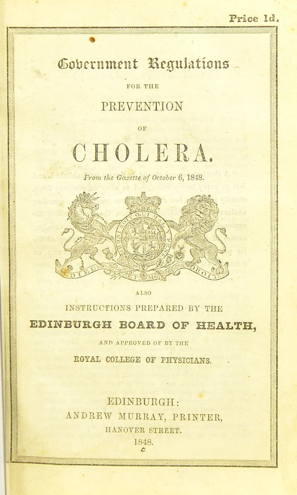
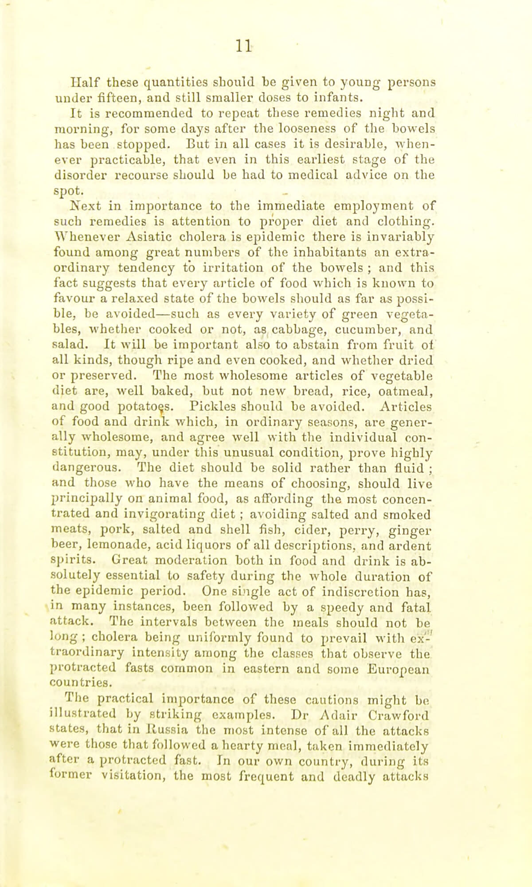
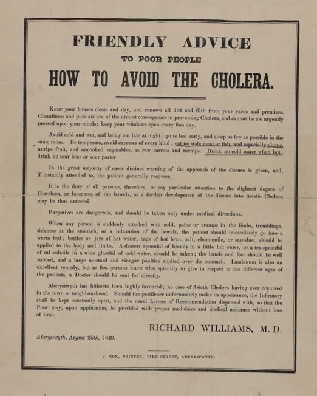
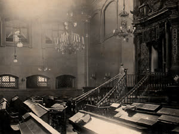
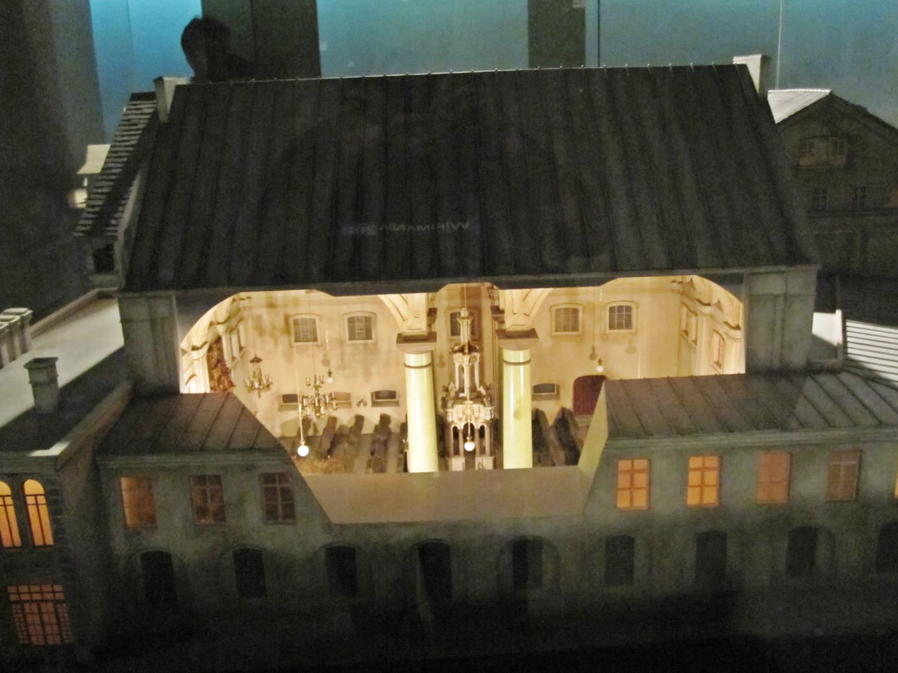
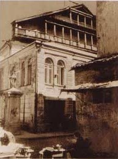
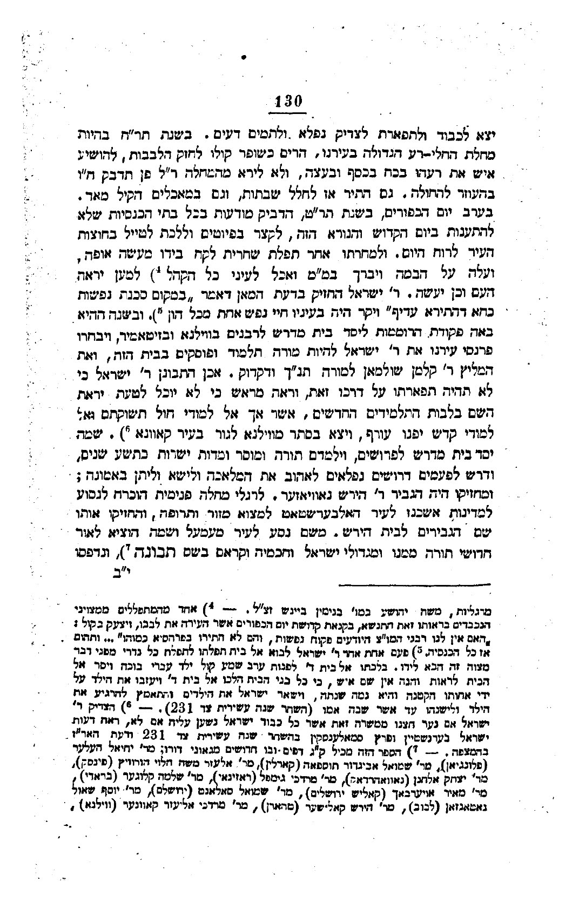
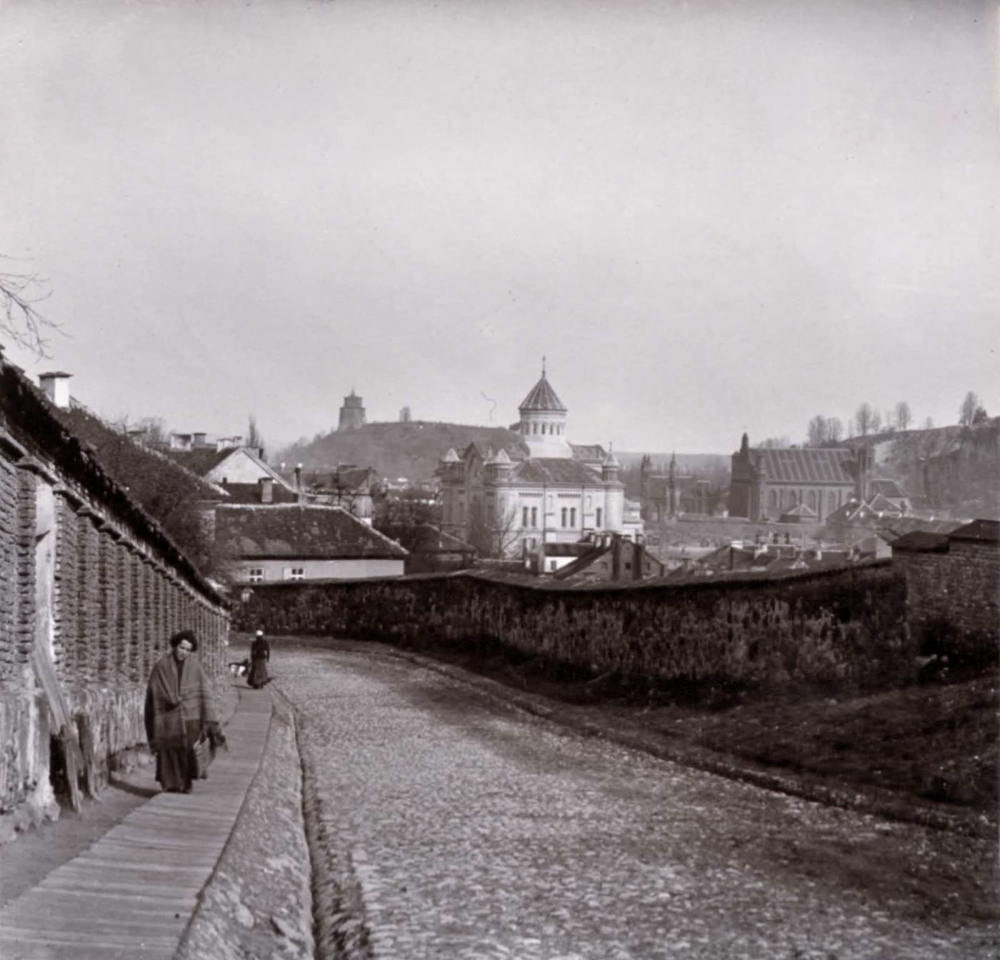
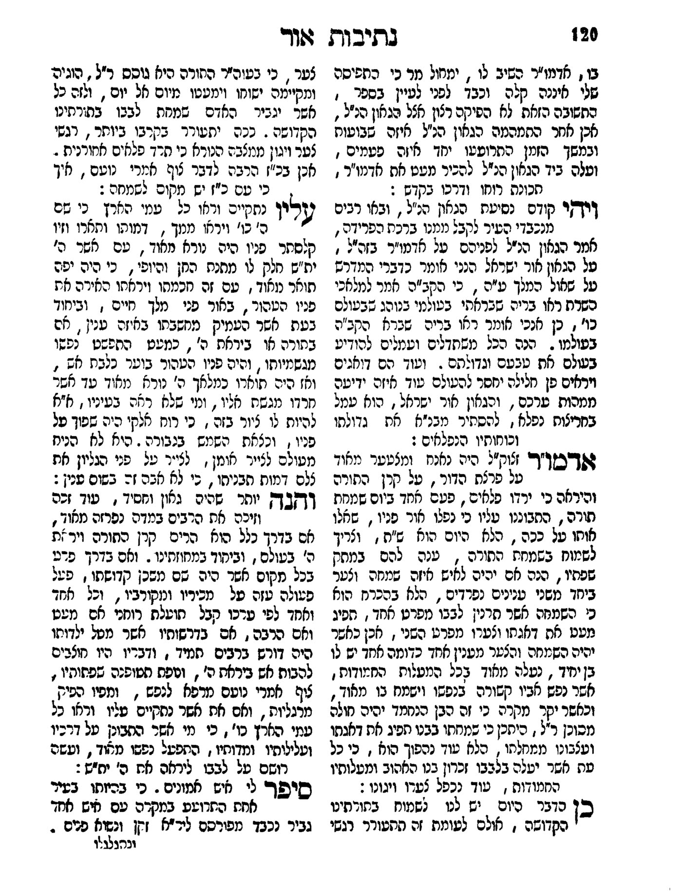
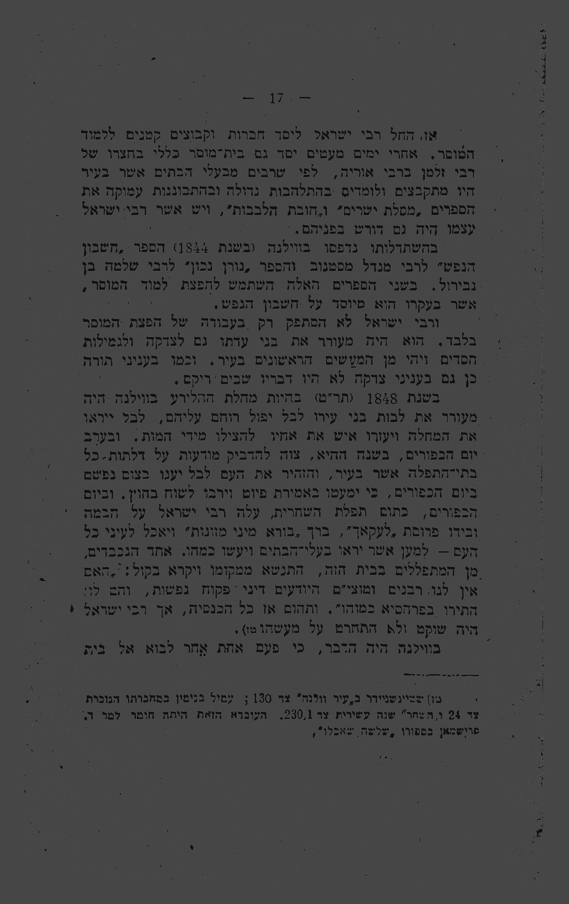

ר' ישראל סלנטר · 3409 מילים · 11 תמונות · 2 סרטונים · לא עבר בודק










שני הסרטונים הם הקשר, לא סיפור. סריקה של שמונה שאילתות בכלי הווידאו לא העלתה ולו סרטון אחד המספר את המעש. ⟨מ-128, images.md §7⟩ ו-1 · רשות העתיקות, הערוץ הרשמי · 5.8.2026 · 1:15 · עברית · תומלל במלואו. ארכיאולוג בחפירה בווילנה מראה את המדרגות שעלו אל הבימה של בית הכנסת הגדול, ואומר שהוא יושב על הבימה שנחשפה. סביבו, לדבריו, רצפות צבעוניות שהונחו במקום עוד בתחילת המאה התשע־עשרה, לוחיות של מושבים של אנשים שהתפללו שם, והעמודים הנפולים של המבנה. ו-2 ·
https://www.youtube.com/watch?v=iHNFw3eFN7M רשות העתיקות, הערוץ הרשמי · 5.8.2026 · 1:15 · עברית · תומלל במלואו. ארכיאולוג בחפירה בווילנה מראה את המדרגות שעלו אל הבימה של בית הכנסת הגדול, ואומר שהוא יושב על הבימה שנחשפה. סביבו, לדבריו, רצפות צבעוניות שהונחו במקום עוד בתחילת המאה התשע־עשרה, לוחיות של מושבים של אנשים שהתפללו שם, והעמודים הנפולים של המבנה. ו-2 · רשות העתיקות, הערוץ הרשמי · 26.8.2021 · 1:36 · עברית · תומלל במלואו. סיור בחפירה עם הארכיאולוגים מליטא. בית הכנסת נבנה תחילה במאה השבע־עשרה ועמד במקום, לדברי החופר, שלוש עד ארבע מאות שנה. הסרטון עובר בין אחד מארבעת העמודים הענקיים
מעש: salanter · מזהה: 75076aa3 · נכתב: 22.8.2026 ·
כותב: office:slim-doer
🔒 לא הועלה לאתר. תומר מאשר.
הערת עריכה: הסימון ⟨מ-NNN⟩ שאחרי כל משפט הוא מזהה הממצא ביומן
שממנו נולד המשפט. ⟨מקשר⟩ מסמן משפט שאינו נושא עובדה חדשה.
הסימונים אינם חלק מן הדף ויוסרו בהעלאה.
במגפת הכולרה של תר"ח קרא ישראל סלנטר לבני ווילנה לעזור זה לזה ולא
לירא מן הנוגע בחולה, התיר לחלל שבת, והקל במאכלים. ⟨מ-131 §א⟩ בערב יום
הכיפורים של השנה שאחריה הדביק מודעות בכל בתי הכנסת שבעיר שלא להתענות
ביום הזה. למחרת בבוקר עלה בעצמו על הבימה, בירך על דבר מאפה, ואכל
לעיני הקהל. ⟨מ-131 §ב⟩ את הסצנה הזאת מספר ספר שנדפס בווילנה בשנת 1900,
חמישים ושתיים שנה אחרי. ⟨מ-131⟩
אין בשום מקור מספר של ניצולים, ואין מקור שקושר את ההוראה לתוצאה.
⟨מ-064, מ-131 §ו⟩ יש, לעומת זאת, עדות וילנאית בת אותו דור — מצוטטת כאן
דרך מאמר בן ימינו — הטוענת שבשנות המגפה צמו כולם ולא אירע להם דבר.
⟨מ-124 §ג, מ-115⟩
ולמה לא הספיקה המודעה? על כך עונה המקור בחמש מילים. ⟨מקשר⟩
בשנת תר"ח פשטה בווילנה מגפת הכולרה. ⟨מ-131 §א⟩ עיר ווילנא, ספר
תולדות מקומי שנדפס בעיר עצמה, מוסר שישראל סלנטר »הרים כשופר קולו לחזק
הלבבות«, וקרא לבני העיר להושיע איש את רעהו »בכח בכסף ובעצה«, ולא לירא
מן המחלה פן תידבק במי שעוזר לחולה. ⟨מ-131 §א⟩ באותה מגפה התיר גם לחלל
שבת, ובמאכלים, כלשון המקור, »הקיל מאד«. ⟨מ-131 §א⟩
זו הפעולה שקדמה לכול. ⟨מקשר⟩ יום הכיפורים
והבימה הם השנה שאחריה, תר"ט, והמקור מפריד ביניהן בשני משפטים נפרדים
ובשתי שנים נקובות. ⟨מ-131 §א⟩
ישראל סלנטר לא היה רבה של ווילנה, ולא כיהן בה בשום משרת הוראה.
⟨מ-063⟩ לואי גינצברג, שקיבל את החומר מפי שלושה מתלמידיו של סלנטר
בשמם, כותב שהוא מונה לראש ישיבת "מיילישן" בעיר כשהיה בקושי בן שלושים,
ומוסיף שמשכורתו הייתה ארבעה רובלים לשבוע. ⟨מ-063, מ-060⟩ באותן שנים,
לפי גינצברג, חי בווילנה חיים של אדם פרטי לגמרי, ומתוך ענווה לא הכריע
שאלה של איסור והיתר אפילו כשהתעוררה בביתו שלו, אלא הפנה אותה לאחד
מרבני העיר: »he lived strictly the life of a private man, and in his
humility would not decide a question of ritual, not even if it occurred
in his own house, but would refer it to one of the local Rabbis«.
⟨מ-063⟩
ומה שקרה בכל זאת, באותו מקור ובאותה פסקה: »When he saw, however, that
none of them would act in this case, he thought self-assertion to be
his highest duty« — כשראה שאיש מהם אינו פועל בעניין הזה, ראה בנטילת
היוזמה את חובתו העליונה. ⟨מ-063⟩
ואיך הוא נראה, אין דרך לדעת. תלמידו ר' יצחק בלאזר כתב עליו, בווילנה
בשנת 1900: »דמותו ותארו וזיו קלסתר פניו היה נורא מאוד … ומי שלא ראה
בעיניו, א"א להיות לו ציור בזה«. ⟨מ-133⟩ ומיד אחר כך, באותה פסקה: »הוא
לא הניח מעולם לצייר אומן, לצייר על פני הגליון את צלם דמות תבניתו, כי
לא אבה זה בשום ענין«. ⟨מ-133⟩ בלאזר אינו נותן לכך טעם. ⟨מ-133⟩
שתי התמונות המסתובבות ברשת תחת שמו הן של שני אנשים אחרים. באחת מהן,
שדה התיאור של הקובץ עצמו אומר »Yitzchak Lipkin« — בנו. ⟨מ-133⟩ שנייר
ליימן, שבדק את השאלה, מסכם: »we do not know what R. Yisrael looked
like, other than by the vivid descriptions by those who actually saw
him«. ⟨מ-133⟩
בעת ההוראה לא ידע איש בעולם מה גורם לכולרה. ⟨מ-126⟩ חיבורו של ג'ון
סנואו על דרך ההידבקות פורסם רק באוגוסט 1849, ורוברט קוך בידד את חיידק
הכולרה בתחילת 1884. ⟨מ-126⟩ הרפואה של 1848 פעלה לפי תורת המיאזמה ולפי
רשימה של הרגלים שנחשבו למגבירי סיכון, והצום היה אחד מהם. ⟨מ-126⟩
בחוברת שנדפסה באדינבורו ב-1848 ובה תקנות הממשלה, מתוך ה-Gazette של
6 באוקטובר 1848, נכתב בעמוד 11: »The intervals between the meals should not be long;
cholera being uniformly found to prevail with extraordinary intensity
among the classes that observe the protracted fasts common in eastern
and some European countries«. ⟨מ-126, מ-134⟩ מיד אחריו מובאת אמירתו
של ד"ר אדייר קרופורד, שברוסיה ההתקפות החמורות מכולן היו אלה שבאו
אחרי ארוחה גדולה שנאכלה מיד בתום צום ממושך. ⟨מ-126⟩ שישה ימים אחר כך
ניסחה מועצת הבריאות של אדינבורו רשימת הוראות לציבור, ורביעית בהן:
»IV. To shun long fasts«. ⟨מ-126⟩
יום הכיפורים של תר"ט חל ב-7 באוקטובר 1848, יום אחד אחרי פרסום התקנות
בלונדון. ⟨מ-126, מ-134⟩ אין בשום מקור ראיה שסלנטר ראה את המסמכים
האלה, וה-Gazette הלונדוני לא יכול היה להגיע לווילנה הרוסית ביום אחד.
⟨מ-134⟩ הסמיכות היא של הידע הרפואי באירופה, לא של האיש. ⟨מ-134⟩
והרפואה הזאת טעתה. צום אינו גורם כולרה. ⟨מ-126⟩
»בערב יום הכפורים, בשנת תר"ט, הדביק מודעות בכל בתי הכנסיות שלא
להתענות ביום הקדוש והנורא הזה, לקצר בפיוטים וללכת לטייל בחוצות העיר
לרוח היום.« ⟨מ-131 §ב⟩
נוסחן של המודעות לא נשמר, וכל מה שידוע עליהן הוא הסיכום שבמשפט הזה.
⟨מ-131 §ב⟩ ההוראה לא הסתפקה באכילה: היא ביקשה גם לקצר את התפילה,
וגם שילכו ויטיילו בחוצות העיר לרוח היום. ⟨מ-131 §ב⟩
»ולמחרתו אחר תפלת שחרית לקח בידו מעשה אופה, ועלה על הבמה ויברך במ"מ
ואכל לעיני כל הקהל, למען יראה העם וכן יעשה.« ⟨מ-131 §ב⟩
»מעשה אופה« הוא דבר מאפה, ו»במ"מ« הוא בורא מיני מזונות. ⟨מ-131 §ב⟩
כלומר לא סעודה, ולא קידוש על יין, אלא ברכה על מאפה ואכילה לעיני הקהל.
⟨מ-131 §ב⟩
המקור אינו נוקב באיזה מבתי הכנסת של וילנה היה הדבר; התצלומים שכאן הם
של בית הכנסת הגדול שבעיר. ⟨מ-131 §ב⟩
וחמש המילים האחרונות הן התשובה לשאלה שהמודעות הותירו פתוחה: »למען
יראה העם וכן יעשה«. ⟨מ-131 §ב⟩ מודעה בכתב אינה מוציאה אדם מספק ביום
הכיפורים. הדבר שכן מוציא אותו מספק הוא לראות מישהו עושה זאת.
⟨מ-131 §ב⟩
ההיתר עצמו לא היה חידושו. שטיינשניידער כותב שסלנטר »החזיק בדעת המאן
דאמר 'במקום סכנת נפשות כחא דהתירא עדיף'«, כלומר בחר בין דעות קיימות.
⟨מ-131⟩ החפץ חיים, בביאור הלכה לסימן תרי"ח, מפנה בשאלה הזאת עצמה —
אכילה ביום הכיפורים בשעת מגפה — לתשובה של החתם סופר. ⟨מ-115⟩ ההוראה
שגם הבריאים יאכלו פחות מכשיעור בשעת מגפה, כלשון מאמר בן ימינו,
»כבר הורה זקן החת"ס«. ⟨מ-124 §ה⟩ מה שהיה חדש הוא הפומביות.
⟨מ-131, מ-115⟩
באותו עמוד עצמו, בהערת שוליים, מוסר שטיינשניידער מה קרה מיד אחרי כן:
»אחד מהמתפללים המצוינים הנכבדים בראותו זאת התנשא, בקנאת קדושת יום
הכפורים אשר העירה את לבבו, ויצעק בקול: "האם אין לנו רבני המו"צ
היודעים פקוח נפשות, והם לא התירו בפרהסיא כמוהו" … ותהום אז כל
הכנסיה.« ⟨מ-131 §ג⟩
הצועק הוא מתפלל מן הקהל. אין בהערה הזאת בית דין, אין דיין, ואין מחאה
רשמית. ⟨מ-131 §ג⟩ בגרסה מאוחרת יותר, המובאת בשם תנועת המוסר לדב
כ"ץ, עולה אחריו על הבימה זקן הדיינים שבווילנה, ר' בצלאל, ומוחה בשם כל
הדיינים על היתר כללי שניתן בלי הוראת רופא לכל מקרה לגופו. ⟨מ-124 §ו,
מ-130 §ח⟩ הרכיב הזה אינו בעמוד שאותה מסורת מפנה אליו. ⟨מ-131 §ג⟩
ר' בצלאל הזה אינו ר' בצלאל הכהן בעל ראשית בכורים, שיובא בקטע הבא;
המאמר שמביא את שניהם אומר במפורש »ונראה שאינו אותו ר' בצלאל שהוזכר
לעיל«. ⟨מ-124 §ב⟩
ואין להסיק מכאן שלא הייתה התנגדות רבנית. היא קיימת בדפוס. ⟨מקשר⟩
בשו"ת מצפה אריה תנינא, שנדפס בלבוב בשנת בעת"ר (תרע"ב), כותב ר' אריה
ליב ברודא: »ודכירנא כד הוינא טליא ששמעתי בעיר מולדתי הוראדנא … מחלוקת
בק"ק ווילנא בין הרבנים דשם, כי הרב הגאון ר' ישראל סאלאנטער ז"ל הורה
שלא להתענות ביוה"כ, ושאר גדולי הרבנים חלקו עליו; אך הוא בעצמו לא
השגיח על דבריהם … שטעם ביוה"כ בפומבי בבהכ"נ, ועי"ז נהיתה רעש גדול
בעיר.« ⟨מ-101⟩ ברודא מסייג את עצמו בגוף המשפט: זו שמועה ששמע בילדותו,
בגרודנה, לא בווילנה. ⟨מ-102⟩
וגינצברג מוסר על מה בדיוק גערו בו: »not only for what he did, but
also for having assumed the authority belonging to the official leaders
of the community« — לא רק על המעשה, אלא על כך שנטל לעצמו סמכות
שהייתה של ראשי הקהילה הרשמיים. ⟨מ-065⟩
אין באף אחד מן המקורות מספר של ניצולים. ⟨מ-064, מ-131 §ו⟩
אין באף אחד מהם מקור שקושר את ההוראה לתוצאה. ⟨מ-064, מ-131 §ו⟩
המקור המוקדם ביותר, עיר ווילנא, אינו נוקב במספר חולים, במספר
נפטרים, בשם רופא או בהוראה של רשות בריאות. ⟨מ-131 §ו⟩ גם מספר החולים
והמתים בכולרה בווילנה או בפלך וילנה בשנת 1848 אינו מופיע בשום מקור
שנפתח כאן. ⟨מ-126⟩
הטענה היחידה שנמצאה על הצלת חיים היא עדותו של סלנטר על עצמו, והיא
מגיעה בעל־פה ודרך תלמיד. גינצברג כותב שסלנטר נהג לחזור על הפרשה
בשנים מאוחרות, ושהיה משוכנע שרבים שנחלשו מן הצום היו נופלים קרבן
למחלה, ושבכך שהאכיל את האנשים ביום הצום הגדול הציל נפשות רבות.
⟨מ-064⟩ הניסוח הוא »He was convinced«. גינצברג אינו כותב שנפשות
ניצלו; הוא כותב שסלנטר האמין שנפשות ניצלו. ⟨מ-064⟩ את הדברים האלה
מסר גינצברג בהרצאה פומבית בפברואר 1904, חמישים ושש שנה אחרי. ⟨מ-059⟩
ומן הצד השני יש עדות מפורשת ההפוכה, מווילנה, מאותו דור. החפץ חיים
מפנה בביאור הלכה, באותה סוגיה עצמה, לספר ראשית בכורים לר' בצלאל
הכהן מווילנה, שחולק על החתם סופר. ⟨מ-115⟩ ראשית בכורים עצמו לא נפתח
כאן; לפי הציטוט המובא ממנו במאמר בן ימינו, כתב שם ר' בצלאל הכהן
»להודיע הדבר הגדול הזה לדורות עולם … התענו כולם בצום כיפור … בכל
מדינתנו אז, ולא קרה להם כל רע חלילה … שביום הכיפורים לא נחלה שום אדם
ח"ו על ידי הצום כלל«. ⟨מ-124 §ג⟩ שלוש שנות המגפה שהוא מונה שם נקראו
במאמר תקצ"ט, תר"ט ותרכ"ז; בסריקה אחרת של אותו קטע נקראה השנייה שבהן
»ות"ט«, וההכרעה תלויה בפתיחת הספר עצמו. ⟨מ-124 §ג⟩
באותה שנה, תר"ט, יצא סלנטר מווילנה. עיר ווילנא תולה זאת בדבר אחר
לגמרי: השלטון הורה לייסד בית מדרש לרבנים בווילנה ובז'יטומיר, פרנסי
העיר בחרו בסלנטר להיות בו מורה תלמוד ופוסקים, »אכן התבונן ר' ישראל
כי לא תהיה תפארתו על דרכו זאת« והוא »יצא בסתר מווילנא לגור בעיר
קאוונא«. ⟨מ-131 §ה⟩ הסמיכות בין השניים היא מה שאיפשר למסורת מאוחרת
לקשור ביניהם, והמקור המוקדם ביותר אינו קושר. ⟨מ-131 §ה⟩
בספרות הפוסקים שבאה אחריו, סלנטר נוכח פחות ממה שנדמה. ⟨מקשר⟩
החפץ חיים דן בשאלה הזאת ממש — אכילה ביום הכיפורים בשעת מגפת כולרה —
בביאור הלכה לסימן תרי"ח, ומונה שם שמונה מראי מקום. ⟨מ-115, מ-117⟩
סלנטר אינו אחד מהם. ⟨מ-117⟩ המחלוקת שהחפץ חיים מציג היא בין החתם
סופר לבין ראשית בכורים, וסלנטר אינו צד בה. ⟨מ-117⟩ הוא כתב בראדין,
לא רחוק מווילנה, ובחייהם של אנשים שזכרו את תר"ט. ⟨מ-118⟩
המקום שבו סלנטר כן נכנס לפסק הוא שו"ת אגרות משה, במכתב מג' במרחשוון
תשכ"ו. ⟨מ-107⟩ ר' משה פיינשטיין דן שם בשאלה אחרת — נטילת תרופות ביום
הכיפורים בחולה שאין בו סכנה — ומגיע לצדדים של בריא המשמש חולה במחלה
מידבקת: »וגם ברור שאף בריא ממש אם צריך לשמש חולה שמחלתו מתדבקת וכדי
שלא יחלה צריכים לעשות לו רפואה שיש בה חלול שבת נמי מותר, כיון דבלא זה
אפשר שיחלה במחלה המסוכנת, וידוע שהגאון ר' ישראל
סלנטר ז"ל צוה בשעה שהיה מחלת הכולירע המתפשטת, לאכול ביו"כ כל בני
העיר«. ⟨מ-108⟩ הדבר שהותר שם אינו אכילה ביום הכיפורים אלא חילול שבת,
וסלנטר מובא כתקדים לדין אחר מזה שהוא עצמו הכריע בו. ⟨מ-110⟩
המילה »וידוע« היא לשון של ודאות, לא של תיעוד: ר' משה
אינו נוקב בספר, בעד או בשרשרת מסירה. ⟨מ-109⟩ והדין כבר נחתך במילה
»ברור« שלפניה. סלנטר בא אחריה כחיזוק, וההיתר אינו תלוי בו. ⟨מ-110⟩
הסצנה שבכותרת הדף היא הגרסה של עיר ווילנא, וילנה 1900. ⟨מ-131⟩
לצידה עומדות אחרות, והן אינן וריאציות זו של זו. ⟨מקשר⟩
במקור ברוך לברוך עפשטיין, שנדפס בווילנה בתרפ"ח, סלנטר עולה על
הבימה ואיתו שני מורי הוראה, לוקח כוס יין ומקדש עליה, והשנה שם היא
תר"ל ולא תר"ט. ⟨מ-130 §ב⟩ הספר עצמו לא נפתח כאן, והדברים מצוטטים
בשמו. ⟨מ-130 §ב⟩ אצל גינצברג, שהובא כאן למעלה, סלנטר נועץ תחילה
ברופאים אחדים, נושא דברים אל הקהל מן הבימה, ומוציא עוגה ויין — מברך,
אוכל ושותה. ⟨מ-061⟩ בנו של סלנטר, ר' יצחק, כתב ברשימותיו שאביו הורה
לאכול פחות מכשיעור ולא יותר; יעקב מרק, בשם עד ראייה ושמו ר' שמעון
שטרשון, כתב שסלנטר עצמו לא אכל כלל. ⟨מ-130 §ד, מ-130 §ג⟩ שני אלה אף
הם מצוטטים בשם ולא נפתחו. ⟨מ-130 §ג⟩ והמחקר האקדמי, אצל עמנואל אטקס,
מעדיף גרסה שאין בה עימות עם רבני ווילנה כלל: לפיה פרסם סלנטר בעצה
אחת עמם הוראה שלא להאריך בתפילה, בכל בית כנסת הוכנו פרוסות עוגה פחות
מכשיעור, והצעד הפומבי שגרר עליו ביקורת היה הכרזה שכל מי שמרגיש חולשה
רשאי להשתמש בהן בלי לשאול רופא. ⟨מ-124 §ה⟩ גם אטקס מצוטט כאן דרך
מאמר, ולא מן הספר. ⟨מ-124 §ה⟩
ואפשר לראות בעין אחת איך פרט נולד. בשנת תרע"א, אחת־עשרה שנים אחרי
שטיינשניידער, פרסם שמואל רוזנפלד בוורשה ספר על סלנטר, ובעמוד 17 שלו
מופיעה אותה סצנה. ⟨מ-136⟩ הערת השוליים שלו מפנה במפורש אל
»שטיינשניידר ב'עיר ווילנה' צד 130«. ⟨מ-136⟩ צעקת המתנגד זהה אצלו כמעט
מילה במילה, כולל צירוף המילים »והם לא התירו בפרהסיא כמוהו«. ⟨מ-136⟩
זו אותה עדות בניסוח אחר, לא עדות נוספת. ⟨מ-136⟩ ושני דברים שאינם
אצל שטיינשניידער כלל מופיעים אצלו בלי מקור: »מעשה אופה« נעשה
»פרוסת 'לעקאך'«, והשתיקה שאחרי הצעקה נעשית »אך רבי ישראל היה שוקט
ולא התחרט על מעשהו«. ⟨מ-136⟩
והדבר שאינו נמצא הוא הכבד מכולם. ר' יצחק בלאזר היה תלמידו המובהק של
סלנטר, והוציא בווילנה בשנת תר"ס את אור ישראל, אוסף תורתו ומעשיו של
רבו. ⟨מ-118⟩ המילה כולרה אינה מופיעה שם ולו פעם אחת, בשבעה כתיבים
שונים. ⟨מ-116⟩ באותה שנה עצמה, ובאותה עיר, נדפס עיר ווילנא ובו
הסיפור במלואו. ⟨מ-131, מ-118⟩
נשאר העמוד עצמו. שטיינשניידער הוא היסטוריון מקומי שכותב עם הערות
שוליים, ובאותו עמוד ק"ל הוא נותן מראה מקום לאנקדוטה צדדית על תינוק
בליל כל נדרי, ומראה מקום לפרשת בית המדרש לרבנים שהוציאה אותו מן העיר.
⟨מ-131 §ד⟩ לסצנה על הבימה הוא אינו נותן מראה מקום
כלל. ⟨מ-131 §ד⟩ ייתכן שלא היה צריך, מפני שכל העיר ידעה. וייתכן שלא
היה לו. ⟨מקשר⟩ שתי האפשרויות פתוחות, והעמוד עצמו אינו מכריע ביניהן.
⟨מ-131 §ד⟩
ת-8 · ראש הדף
העמוד שממנו נלקח גרעין הסיפור: עיר ווילנא לר' הלל נח מגיד
שטיינשניידער, וילנה 1900, עמוד ק"ל. הטור התחתון הוא ההערות, ובהן
הצעקה מן הקהל.
ת-10 · אחרי קטע 2
אור ישראל לר' יצחק בלאזר, וילנה 1900, עמוד ק"כ, בחטיבת *נתיבות
אור*. בשלוש השורות האחרונות של הפסקה כותב תלמידו של סלנטר שרבו לא
הניח מעולם לאמן לצייר את דמותו על הנייר.
ת-1 · בתוך קטע 3
תקנות הממשלה למניעת הכולרה, אדינבורו 1848. השורה שמתחת לכותרת מוסרת
את התאריך: מתוך ה-Gazette של 6 באוקטובר 1848, יום לפני יום הכיפורים
תר"ט.
ת-2 · בתוך קטע 3
עמוד 11 באותה חוברת. הפסקה על המזון קובעת שאין להאריך את המרווחים
בין הארוחות, ושהכולרה נמצאה קשה במיוחד אצל אוכלוסיות הנוהגות בצומות
ממושכים.
ת-3 · בתוך קטע 4
»עצה ידידותית לאנשים עניים — כיצד להימלט מן הכולרה«. כרוז שהדפיס
רופא בעיירה אברסטוויט שבוויילס, באוגוסט 1849. המודעות שסלנטר הדביק
בווילנה לא שרדו; כך נראה כרוז כולרה שכן שרד מאותן שנים.
ת-4 · בתוך קטע 5
בית הכנסת הגדול של וילנה, מצולם מגג סמוך בידי הצבא הגרמני בין 1914
ל-1918. המבנה נשדד בתקופה הנאצית ונהרס בידי השלטון הסובייטי בשנות
החמישים.
ת-5 · בתוך קטע 5
פנים בית הכנסת הגדול של וילנה, בין 1920 ל-1930. המבנה המוגבה מימין,
שעולות אליו מדרגות, הוא ארון הקודש.
ת-6 · בתוך קטע 5
דגם חתך של בית הכנסת הגדול של וילנה והחצר שסביבו, מוצג במוזיאון בית
התפוצות בתל אביב. הגג הוסר בדגם כדי לחשוף את האולם. צילום:
Sodabottle, 2011, CC BY-SA 3.0.
ת-11 · בתוך קטע 9
ר' ישראל סלנטר לשמואל רוזנפלד, ורשה תרע"א, עמוד 17. הערת השוליים
בתחתית העמוד מפנה אל »שטיינשניידר ב'עיר ווילנה' צד 130« — אל העמוד
שהסיפור כבר נדפס בו אחת־עשרה שנים קודם לכן.
ת-9 · חתימת הדף
וילנה, 1900. צילום: סטניסלב פיליבר פלרי. באותה שנה נדפסה בעיר הזאת,
חמישים ושתיים שנה אחרי המעשה, העדות הכתובה המוקדמת ביותר עליו.
| מיקום | פריט |
|---|---|
| ראש הדף | ת-8 |
| אחרי קטע 2 | ת-10 |
| בתוך קטע 3 | ת-1, ואחריו ת-2 |
| בתוך קטע 4 | ת-3 |
| בתוך קטע 5 | ת-4 · ת-5 · ת-6 |
| אחרי קטע 5 | ו-1, ואחריו ו-2 |
| קטעים 6–7 | ריק בכוונה |
| בתוך קטע 9 | ת-11 |
| חתימת הדף | ת-9 |
קטעים 6 ו-7 נשארים בלי תמונה. בקטע 7 הריקנות היא העניין: אין מספר
ניצולים, ולכן אין מה לצלם.
שני הסרטונים הם הקשר, לא סיפור. סריקה של שמונה שאילתות בכלי הווידאו
לא העלתה ולו סרטון אחד המספר את המעש. ⟨מ-128, images.md §7⟩
ו-1 · https://www.youtube.com/watch?v=iHNFw3eFN7M
רשות העתיקות, הערוץ הרשמי · 5.8.2026 · 1:15 · עברית · תומלל במלואו.
ארכיאולוג בחפירה בווילנה מראה את המדרגות שעלו אל הבימה של בית הכנסת
הגדול, ואומר שהוא יושב על הבימה שנחשפה. סביבו, לדבריו, רצפות צבעוניות
שהונחו במקום עוד בתחילת המאה התשע־עשרה, לוחיות של מושבים של אנשים
שהתפללו שם, והעמודים הנפולים של המבנה.
ו-2 · https://www.youtube.com/watch?v=M9CQfA1Kcxg
רשות העתיקות, הערוץ הרשמי · 26.8.2021 · 1:36 · עברית · תומלל במלואו.
סיור בחפירה עם הארכיאולוגים מליטא. בית הכנסת נבנה תחילה במאה
השבע־עשרה ועמד במקום, לדברי החופר, שלוש עד ארבע מאות שנה. הסרטון
עובר בין אחד מארבעת העמודים הענקיים של האולם, המדרגות שעלו אל ארון
הקודש ונהרסו, והמרתף שמתחת לבימה.
הרשימה יושבת בתחתית הדף. הסיפור למעלה אינו מפנה אליה.
המקור המוקדם ביותר למעשה
הלל נח מגיד שטיינשניידער, עיר ווילנא, וילנה 1900, עמוד ק"ל.
היסטוריה מקומית עם הערות שוליים. חמישים ושתיים שנה אחרי המעשה.
המחבר אינו עד. hebrewbooks, מזהה בקשה 44215, סריקה 146. כל מילה
המצוטטת כאן נקראה מתצלום הדף. ⟨מ-131⟩
עדות עצמית
Louis Ginzberg, Students, Scholars and Saints, Philadelphia 1928,
פרק ז'. החומר נמסר בהרצאה פומבית בפברואר 1904, חמישים ושש שנה אחרי
המעשה, והמחבר מצהיר שמקורותיו הם מסירה בעל־פה משלושה מתלמידי סלנטר.
חיבור מפאר, ומוסר בכל זאת את ההתנגדות. ⟨מ-058, מ-059, מ-060, מ-061,
מ-065⟩
המסירה השנייה של אותו עמוד
שמואל רוזנפלד, ר' ישראל סלנטר: חייו, פעולותיו ותלמידיו, ורשה תרע"א
(1911), עמוד 17. hebrewbooks, מזהה בקשה 46783, סריקה 016; העמוד וגם
הערת השוליים נקראו מחיתוכי זום על התצלום. הערתו מפנה אל שטיינשניידער
עמוד 130, ולכן אין זה מקור שני אלא אותו מקור בניסוח אחר. ⟨מ-136⟩
ספרות הפוסקים
שו"ת מצפה אריה תנינא, ח"ב, סי' מה, לבוב, שנת בעת"ר (תרע"ב). נקרא
מתצלום. המחבר מסייג שזו שמועת ילדות מגרודנה. ⟨מ-101, מ-102⟩
ביאור הלכה, סי' תרי"ח ס"א, ד"ה חולה — ראדין/ורשה. הטקסט מספריא,
מהדורה בדוקה. ⟨מ-115⟩
שו"ת אגרות משה, או"ח ח"ג, סי' צא (עמ' תד), ניו יורק תשל"ג. המכתב
מתוארך ג' מרחשוון תשכ"ו. נקרא מתצלום ב-450 dpi. ⟨מ-107, מ-108⟩
ההקשר הרפואי
*Government Regulations for the Prevention of Cholera; also
Instructions prepared by the Edinburgh Board of Health*, Edinburgh:
Andrew Murray, 1848. Wellcome Collection b21450730, נחלת הכלל.
עמודים 11 ו-14 נקראו מן התצלום ולא מן ה-OCR. ⟨מ-126, מ-134⟩
הדיוקן
ר' יצחק בלאזר, אור ישראל, וילנה תר"ס (1900), עמוד ק"כ, חטיבת
נתיבות אור. הטקסט ממהדורת ספריא »Ohr Yisrael, Vilna 1900«, נחלת
הכלל, ואומת מתצלום הדף: hebrewbooks, מזהה בקשה 14564, סריקה 119.
⟨מ-133, מ-138⟩
Shnayer Leiman, "Some Notes on Verifying the Authenticity of the
Alleged Rav Yisrael Salanter Photographs", The Seforim Blog,
אפריל 2022. ⟨מ-133⟩
מקורות שצוטטו בשם ולא נפתחו
מקור ברוך לברוך עפשטיין, וילנה תרפ"ח, ח"ב עמ' 1012 · יעקב מרק,
גדולים פון אונזער צייט, 1927 · דב כ"ץ, תנועת המוסר, עמ' 152 ·
עמנואל אטקס, ר' ישראל סלנטר, עמ' 183 · ראשית בכורים לר' בצלאל
הכהן, וילנה 1869, דף ל"ג. כל אחד מאלה מגיע לכאן דרך מקור אחר, ומסומן
ככזה בגוף הדף. ⟨מ-124, מ-130⟩
מה שנבדק ולא נמצא
אור ישראל, וילנה 1900 — שבעה כתיבים של "כולרה", אפס מופעים, עם מונח
בקרה עובר. ⟨מ-116⟩
ביאור הלכה, הטקסט המלא — ארבעה כתיבים של שם סלנטר, אפס מופעים, עם
שמונה מונחי בקרה עוברים. ⟨מ-117⟩
נתון מספרי על חולי כולרה או נפטרים בווילנה או בפלך וילנה ב-1848 —
לא נמצא. ⟨מ-126⟩
מה שעדיין פתוח
השחר, שנה עשירית (1879), עמודים 230–231 — שני מחברים מפנים לשם,
ושטיינשניידער תולה שם אנקדוטה אחרת ולא את הבימה. ⟨פ-73⟩
ראשית בכורים דף ל"ג, במישרין, ובכלל זה קריאת שלוש השנים. ⟨פ-02, פ-41⟩
יעקב מרק, במישרין — הגרסה שסלנטר עצמו לא אכל. ⟨פ-66⟩
אטקס עמ' 183, במישרין. ⟨פ-55⟩
עמיל בנימין, המחברת שרוזנפלד מפנה אליה, עמ' 24. ⟨פ-77⟩
מעש: salanter · מזהה: 75076aa3 · נבדק: 22.8.2026 ·
בודק: office:slim-doer
🔒 לא הועלה לאתר. תומר מאשר.
שיטה: כל בדיקה כאן רצה מול הקובץ, לא מן הזיכרון — חילוץ
מכני מ-page.md, ואז פתיחת journal.md בממצא שהמשפט עצמו מצטט.
[[verify-from-source-not-memory]] · [[per-sentence-keying-check]].
16 ליקויים נמצאו, 16 תוקנו. הפירוט למטה, ובסופו ספירה של **איפה
נולד כל ליקוי**.
הכותרת: »ישראל סלנטר: במגפת הכולרה הודיע שלא לצום ביום הכיפורים,
ואכל על הבימה«
| מה הכותרת מבטיחה | היכן היא נפרעת | ✔ |
|---|---|---|
| מגפת כולרה | קטע 1 (תר"ח) · קטע 3 (הרפואה) | ✅ |
| הודיע שלא לצום | קטע 4 — המודעות | ✅ |
| ואכל על הבימה | קטע 5 — »ועלה על הבמה ויברך במ"מ ואכל« | ✅ |
ומה שהכותרת אינה מבטיחה — ובצדק: אין בה מספר, אין בה »הציל את
העיר«, ואין בה המילה »הרב« (הכרעה 14; סלנטר לא כיהן בווילנה בשום
משרת הוראה, מ-063). »הודיע« ולא »הורה« — כדי לא לייחס סמכות
שלא הייתה לו.
🟠 הקושי שהמבחן כן מעלה, ואיני מטשטש אותו: הכותרת קובעת את הסצנה
בפשטות, בעוד הדף עצמו מראה בקטע 9 שלמקור המוקדם ביותר **אין מראה מקום
לסצנה הזאת**. הכותרת נשענת על המקור הטוב ביותר שבתיק ועומדת בח-1 —
אבל היא אינה נושאת את המרחק. המרחק נישא בטריילר, במשפט השלישי:
»ספר שנדפס בווילנה בשנת 1900, חמישים ושתיים שנה אחרי«. ⇒ **הכותרת
עוברת רק בזכות הטריילר.** מי שיסיר את המשפט הזה — יהפוך את הכותרת
לטענה חשופה.
מדוד ממש, במילים, אחרי סבב התיקונים:
| קטע | מילים | חלק |
|---|---|---|
| טריילר | 113 | 5.6% |
| 1 · המגפה, תר"ח | 76 | 3.8% |
| 2 · ומי היה האיש שהתיר | 271 | 13.5% |
| 3 · מה חשבה הרפואה ב-1848 | 192 | 9.6% |
| 4 · ערב יוה"כ: המודעות | 61 | 3.0% |
| 5 · ההכרעה: הבימה | 147 | 7.3% |
| 6 · הצעקה | 260 | 13.0% |
| 7 · ומה שאין | 299 | 14.9% |
| 8 · ההוראה בספרות ההלכה | 207 | 10.3% |
| 9 · הגרסאות, ומי מספר אותן | 378 | 18.9% |
| סה"כ | 2,004 |
🟢 הדרישה של רגע השר נפרעה במספרים: קטע 7 עלה בכובדו והוא השני
בגודלו. קטעים 7+9 יחד = 33.8% מן הדף — שליש מן העמוד מוקדש למה
שאין ולמי מספר.
🟠 והממצא שלא ציפיתי לו: **קטע 5 — הסצנה שבכותרת — הוא הקצר
שבקטעים הנושאים.** 7.3%, פחות ממחצית קטע 9.
זה אינו ליקוי, וסירבתי לתקן אותו. הסצנה תופסת אצל שטיינשניידער
שני משפטים; כל הרחבה שלה הייתה חייבת לבוא מן הדמיון או מגרסאות
מאוחרות. הקוצר של קטע 5 הוא תיאור נאמן של המקור. ⇒ נרשם כהחלטה,
לא כפגם.
🟢 הריק מכוון: קטעים 6–7 בלי תמונה. בקטע 7 אין מספר ניצולים,
ולכן אין מה לצלם.
מה יאמין מי שקרא את הטריילר בלבד וסגר את הדף?
| האמונה שתיווצר | האם היא נכונה |
|---|---|
| הייתה מגפת כולרה בווילנה, וסלנטר פעל בה | ✅ מ-131 §א |
| הוא הדביק מודעות שלא לצום, ואכל על הבימה | ✅ כפי שמוסר המקור המוקדם |
| המקור לסצנה הוא ספר משנת 1900, 52 שנה אחרי | ✅ נמסר במפורש, במשפט השלישי |
| אין מספר ניצולים ואין קשר מתועד להצלה | ✅ נמסר במפורש |
| יש עדות וילנאית נגדית | ✅ נמסר במפורש |
🔴 ליקוי שנמצא ותוקן. הנוסח הקודם אמר »יש, לעומת זאת, עדות
וילנאית בת אותו דור הטוענת…« — והקורא התם היה מסיק שפתחנו את
העדות. ראשית בכורים לא נפתח (פ-02 פתוחה); הוא מצוטט דרך מאמר
בן ימינו בדרגה ג'. תוקן ל: »עדות וילנאית בת אותו דור — **מצוטטת
כאן דרך מאמר בן ימינו** — הטוענת…«.
זהו אזור ההמצאה השלישי ב-[[inference-zones]]: לא שקר, אלא שתיקה
שמייצרת ברירת מחדל שקרית.
🟢 מה שהטריילר נזהר לא לומר: אינו אומר שווילנה חדלה לצום, אינו
נוקב בשנה השנויה במחלוקת (»ות"ט« מול »תר"ט«, פ-41), ואינו מבטיח
תוצאה. המשפט האחרון פותח שאלה ואינו עונה עליה — »על כך עונה
המקור בחמש מילים« — והחמש נספרו: »למען יראה העם וכן יעשה«.
חילוץ מכני של כל מחרוזת ספרות וכל מילת מספר עברית מגוף הדף
(אחרי הסרת סימוני ⟨מ-NNN⟩, שאחרת הם עצמם נספרים כמספרים).
| המספר | היכן | הממצא | מצב |
|---|---|---|---|
| 1848 · 1849 (תר"ח · תר"ט) | לכל אורך הדף | מ-131 §א — שתי שנים, בשני משפטים נפרדים | ✅ |
| 1900 · »חמישים ושתיים שנה אחרי« | טריילר · קטע 9 · ת-9 | מ-131 (1900) · 1900−1848 | ✅ |
| 1904 · »חמישים ושש שנה אחרי« | קטע 7 | מ-059 — »February 25, 1904« מן הדף | ✅ |
| 1928 | שכבת המקורות | מ-058/059 — שנת הפרסום, בנפרד מן המסירה | ✅ |
| תרע"א (1911) · »אחת־עשרה שנים« | קטע 9 · ת-11 | מ-136 · 1911−1900 | ✅ |
| עמוד 17 · »צד 130« | קטע 9 | מ-136 — נקרא מזום על התצלום | ✅ |
| עמוד ק"ל (130) · סריקה 146 · req 44215 | ת-8 · מקורות | מ-131 | ✅ |
| עמוד ק"כ (120) · סריקה 119 · req 14564 | ת-10 · מקורות | מ-138 — נקרא ואומת מן התצלום | ✅ |
| »ארבעה רובלים לשבוע« | קטע 2 | מ-063 — »four rubles a week« | ✅ |
| »שלושה מתלמידיו« | קטע 2 | מ-060 — בלאזר, נפתלי משאט, ליב רשקס | ✅ |
| עמוד 11 · 6.10.1848 · 7.10.1848 · »שישה ימים« | קטע 3 | מ-126 · מ-134 (12.10 − 6.10) | ✅ |
| 1849 (סנואו) · 1884 (קוך) | קטע 3 | מ-126, טבלת »בדיקת תאריכים« | ✅ |
| »שבעה כתיבים« | קטע 9 · מקורות | מ-116 — הטבלה, שמונה קורפוסים | ✅ |
| »שמונה מראי מקום« | קטע 8 | מ-117 — שמונה, נקובים בשמם | ✅ |
| »ארבעה כתיבים« · »שמונה מונחי בקרה« | מקורות | מ-117 | ✅ |
| ג' מרחשוון תשכ"ו · עמ' תד · 450 dpi | קטע 8 · מקורות | מ-107, מ-108 | ✅ |
| תרפ"ח · עמ' 1012 · »שני מורי הוראה« · תר"ל | קטע 9 | מ-130 §ב | ✅ |
| עמ' 152 · עמ' 183 · 1869 · דף ל"ג | מקורות | מ-124 §ד/§ה · מ-115 | ✅ |
| »שלוש שנות המגפה« · תקצ"ט/תר"ט/תרכ"ז | קטע 7 | מ-124 §ג | ✅ |
| »שמונה שאילתות« | הסרטונים | images.md §7 | ✅ |
| 1914–1918 · 1920–1930 · 2011 · 2022 | כיתובים · מקורות | images.md — שדות DateTimeOriginal ו-Artist בקובץ עצמו | ✅ |
| 1879 · עמודים 230–231 | פתוח | מ-136 §ד — ⚠️ נרשם כפתוח, לא כנבדק | ✅ |
| »חמש מילים« | טריילר · קטע 5 | נספרו: למען · יראה · העם · וכן · יעשה | ✅ |
1. »החתם סופר, שנפטר בשנת תקצ"ט, כעשר שנים לפני תר"ט« ⟨מ-115⟩.
🔴 מ-115 אינה מכילה שנה כלל. היא מצטטת »ח"ס ח"ו סי' ט"ו« ותו לא.
השנה תקצ"ט יושבת ביומן בשורה אחת בלבד — מ-124 §ה — ושם היא **שורה
שלי, לא ציטוט מן המאמר. כלומר: שנה שהגיעה לדף מן הידע הכללי שלי
דרך תחנת ביניים ביומן**, וקיבלה אסמכתה של ממצא שאין בו זכר לה. זו
ח-1 בגופה.
✅ תוקן. השנה הוסרה. במקומה נכתב מה שהמקור כן אומר, בציטוט
ובייחוס גלוי: »ההוראה שגם הבריאים יאכלו פחות מכשיעור בשעת מגפה,
כלשון מאמר בן ימינו, »כבר הורה זקן החת"ס«. ⟨מ-124 §ה⟩«.
מספר הסימן לא נכתב, כדין מ-119/פ-49.
2. »עמד במקום שלוש מאות שנה« (כיתוב ו-2).
🔴 התמליל אומר »עמד כאן במשך 300-400 שנה«. הכיתוב לקח את קצה
הטווח והציג אותו כמספר. [[journal-paraphrase-as-quote]] — גם קצה
טווח הוא מספר חדש.
✅ תוקן ל: »ועמד במקום, לדברי החופר, שלוש עד ארבע מאות שנה«.
3. אורך ו-2: »1:37«.
🔴 duration_sec בקובץ ה-JSON = 96 שניות = 1:36.
✅ תוקן. (ו-1: 75 שניות = 1:15 ✅ עובר.)
4. »לפני שמלאו לו שלושים« (קטע 2).
🟡 המקור: »scarcely thirty years old«. »לפני שמלאו לו« מכריע
אי־בהירות שהמקור משאיר פתוחה.
✅ תוקן ל: »כשהיה בקושי בן שלושים« — תרגום מילולי, בלי הכרעה.
⚠️ ליקוי בבדיקה עצמה, ונרשם: ה-regex שלי לְמילות מספר עבריות
השתמש ב-(?<![א-ת]), ולכן פספס כל צורה עם אות שימוש — »בחמש
מילים«, »לשלושה«. הרצתי סבב שני בלי הלוקְאַהֶד. [[hebrew-number-words]]
מדבר על מילות מספר; ההרחבה שאני מוסיף היום היא אותיות השימוש.
[[scenery-invention]]: בדק־הבית מפספס המצאות שאינן מספרים. סרקתי כל
שם עצם מוחשי בגוף הדף מול הממצא שהמשפט מצטט. שני תפוסים.
**5. »להוציא את הקהל מן האולם הצפוף אל האוויר« (קטע 4) ⟨מ-131 §ב⟩.**
🔴 שטיינשניידער כותב »וללכת לטייל בחוצות העיר לרוח היום«.
הצפיפות אינה שם. מאין באה? מאטקס (מ-124 §ה): »כדי שהציבור
לא ישהה זמן רב מדי בצפיפות בבית הכנסת«. כלומר **שאלתי נימוק
משחזור אקדמי והלבשתי אותו על משפט של המקור המוקדם** — ובקטע שכל כולו
מיוחס למקור המוקדם.
✅ תוקן ל: »וגם שילכו ויטיילו בחוצות העיר לרוח היום«.
**6. »הוראה בכתב תלויה על דלת« (קטע 5).**
🔴 שטיינשניידער: »הדביק מודעות בכל בתי הכנסיות«. אין דלת.
הדלתות הן אצל רוזנפלד 1911 (»על דלתות כל בתי־התפלה«) — הספר
שהדף עצמו מוכיח עליו, בקטע 9, שהוא מסירה מאוחרת שמוסיפה פרטים.
ייבאתי פרט מן המקור שאני מזהיר מפניו.
✅ תוקן ל: »מודעה בכתב אינה מוציאה אדם מספק ביום הכיפורים«.
7. »והיא נמשכה על פני שנה שלמה« (קטע 1), מסומן ⟨מקשר⟩.
🔴 טענה עובדתית שהתחבאה מתחת לתג ⟨מקשר⟩. המקור מוסר תר"ח ותר"ט
כשני משפטים; הוא אינו אומר שהפעילות נמשכה שנה. התג ⟨מקשר⟩ נועד
למשפט שאינו נושא עובדה חדשה — וכאן הוא שימש בדיוק להסתרת אחת.
✅ תוקן: משפט הזמן הוסר.
⚠️ לקח שיטה: התג ⟨מקשר⟩ הוא עצמו אזור המצאה. יש לסרוק אותו,
לא לדלג עליו.
8. »בחוברת שהדפיסה ממשלת בריטניה« (קטע 3).
🔴 החוברת נדפסה בידי **Andrew Murray, printer, Hanover Street,
Edinburgh — מדפיס מסחרי. היא מכילה** תקנות ממשלה; לא הממשלה
הדפיסה אותה. מ-134 קרא את השער מן התצלום ואומר זאת.
✅ תוקן ל: »בחוברת שנדפסה באדינבורו ב-1848 ובה תקנות הממשלה«.
**9. »גורמים שנחשבו מנטים למחלה« (קטע 3).**
🟡 הביטוי מועתק מן היומן, שם הוא בגרשיים כמונח שאול. **לקורא התם
הוא חסר משמעות.**
✅ תוקן ל: »רשימה של הרגלים שנחשבו למגבירי סיכון«.
כל שבעת כיתובי התצלומים זהים לשורת »כיתוב מוצע« ב-images.md,
שנכתבה מן השדות שבתוך הקובץ (DateTimeOriginal, Artist) ומן הדף
המצולם. ✅ עוברים. ובפרט: ת-3 נושא 1849 כפי שכתוב על גיליון
הכרוז עצמו, ולא 1848 כפי שאומר שדה התאריך בוויקישיתוף —
[[photo-text-zoom]]. ות-5 אומר »ארון הקודש« ולא »בימה«, כפי
שמחייב תיאור הקובץ.
⚠️ סיכון שיורי שנרשם ולא נסגר: ת-4/ת-5/ת-6 ו-ו-1/ו-2 יושבים
כולם בקטע 5 ומראים את בית הכנסת הגדול של וילנה — ואף מקור בתיק
אינו אומר באיזה בית כנסת עלה סלנטר על הבימה. שטיינשניידער כותב
»בכל בתי הכנסיות«, ואינו נוקב. **הכיתובים נכתבו כך שאף אחד מהם
אינו טוען שזה המקום (אין »הבימה שעליה«), אבל המיקום בקטע 5
עושה את ההיסק במקום הקורא.** ⇒ נרשם כשאלה לתומר: להזיז את השלישייה
לקטע 1, או להוסיף חצי משפט בקטע 5.
[[per-sentence-keying-check]]. חיפוש של מספר או ניסוח ביומן כולו
מחזיר »עובר« כוזב; פתחתי את הממצא הנקוב בסוגריים של כל משפט.
10. 🔴 שני »ר' בצלאל« מתמזגים לאיש אחד — הליקוי הכבד ביותר במשמרת.
הדף לא אמר לקורא שאלו שני אנשים. מ-124 §ב אומר במפורש, ובאותו
סוגר שבו הוא מזהה את המחבר: »**ונראה שאינו אותו ר' בצלאל שהוזכר
לעיל« — ומוסיף: »הסייג הזה נשמר כלשונו ואסור לשטח אותו.**«
🔴 הקורא התם היה יוצא עם דמות אחת: רב בשם בצלאל שמחה על הבימה,
ואחר כך כתב ספר נגד ההיתר. סיפור קוהרנטי, מרשים — ולא נכון.
✅ תוקן. נוסף בקטע 6: »ר' בצלאל הזה אינו ר' בצלאל הכהן בעל
ראשית בכורים, שיובא בקטע הבא; המאמר שמביא את שניהם אומר במפורש
»ונראה שאינו אותו ר' בצלאל שהוזכר לעיל«. ⟨מ-124 §ב⟩«
11. 🔴 האליפסיס באגרות משה הסתיר את נושא הפסק (קטע 8).
הדף ציטט: »וגם ברור שאף בריא ממש אם צריך לשמש חולה שמחלתו מתדבקת
… נמי מותר«. שלוש הנקודות בלעו את המילים »**וכדי שלא יחלה
צריכים לעשות לו רפואה שיש בה חלול שבת**«.
🔴 בלעדיהן, הקורא — בקטע שכותרתו »ההוראה בספרות ההלכה«, בדף שכולו
על אכילה ביום הכיפורים — מבין שר' משה **מתיר לבריא לאכול ביום
הכיפורים. מ-110 מדגיש שזה דין אחר**: חילול שבת.
✅ תוקן פעמיים: הציטוט הושלם, ונוסף משפט: »הדבר שהותר שם אינו
אכילה ביום הכיפורים אלא חילול שבת, וסלנטר מובא כתקדים לדין אחר מזה
שהוא עצמו הכריע בו. ⟨מ-110⟩«
12. 🟡 גרסת גינצברג נעדרה מרשימת הגרסאות (קטע 9).
הדף מצטט את גינצברג באריכות בקטעים 2, 6 ו-7 — אבל **קטע 9, שכל
תפקידו למנות את הגרסאות, דילג עליו. ואצלו יש יין, יש נאום
אל הקהל, ויש התייעצות מוקדמת עם רופאים אחדים** (מ-061) — שלושה
רכיבים שאינם במקור המוקדם.
✅ תוקן. נוספה שורה: »אצל גינצברג… סלנטר נועץ תחילה ברופאים
אחדים, נושא דברים אל הקהל מן הבימה, ומוציא עוגה ויין — מברך, אוכל
ושותה. ⟨מ-061⟩«
13–14. 🔴🔴 שני כיתובי הווידאו סתרו את התמלילים שלהם.
פתחתי את sources/video/*.txt וקראתי שורה מול שורה.
| הכיתוב אמר | התמליל אומר | |
|---|---|---|
| »ארכיאולוג עומד בתוך בור חפירה« | »אני יושב כרגע על הבימה« | 🔴 סתירה |
| »ומצביע על מדרגות אבן« | »אלה המדרגות שעלו לבימה« | 🔴 שתי המצאות |
| »בור חפירה« | — | 🔴 אין |
| »לוחיות של מושבים ששמות בעליהן עוד חקוקים בהן« | »לוחיות של מושבים, של האנשים שפעם התפוללו פה« | 🔴 החריטה הומצאה |
| »רצפות צבעוניות… בתחילת המאה התשע־עשרה« | זהה | ✅ |
| »עמודים שנפלו« | »העמודים הנפולים« | ✅ |
| (ו-2) »המדרגות ששרדו מארון הקודש« | »מדרגות שנהרסו כאמור על ידי הנאצים והסובייטים« | 🔴 היפוך |
🔴 שורש הליקוי, ואני רושם אותו כי הוא כלל ולא תקלה: תמליל whisper
הוא אודיו. הוא אינו יודע מה נראה במסך. כל פועל־תנוחה בכיתוב
(»עומד«, »מצביע«), כל חומר (»אבן«) וכל פרט חזותי (»חקוקים«) —
נולד אצלי, לא בסרטון. זו הרחבה של [[transcript-no-diarization]]:
לא רק מי מדבר אינו בתמליל, אלא גם מה נראה.
✅ תוקנו שני הכיתובים. כתובים עכשיו ממה שהדובר אומר, עם
ייחוס גלוי בגוף המשפט (»ואומר ש…«, »לדבריו«, »לדברי החופר«).
✅ ובנוסף: »הבימה שנחשפה« ולא »הבימה עצמה« — שלא ייקרא כבימה
שבסיפור, כאיסור שב-images.md הכרעה ג'.
15–16. 🟡 שתי הפניות שגויות בתוך הסוגריים.
ב-§ד. ✅ תוקן.
images.md §7.1. §7.1 מדברת על שלוששאילתות; השמונה יושבות בכותרת §7. ✅ תוקן.
היומן, מ-136 שורת הכותרת, כותב »שמעון רוזנפלד«. הדף כותב
»שמואל רוזנפלד«. הדף צודק: דף השער נקרא מן התצלום ונרשם
ב-M30 — »מאת שמואל רוזנפלד«. ⇒ הטעות ביומן, לא בדף.
ח-5: לא נמחקה. נכתב תיקון מתחתיה כרשומה חדשה.
וגם: רוזנפלד לא הופיע כלל בשכבת המקורות, אף שהוא ת-11 ונושא קטע
שלם. ✅ נוסף, עם המשפט שהוא כל עניינו: »**אין זה מקור שני אלא אותו
מקור בניסוח אחר**«. [[duplicate-source-counting]].
| בדיקה | תוצאה |
|---|---|
| אין משפט יתום — כל משפט נושא ⟨מ-NNN⟩ או ⟨מקשר⟩ | ✅ סריקה מכנית: רק הכותרת בלי סימון, כצפוי |
| עדות עצמית בייחוס גלוי בגוף המשפט | ✅ »לפי גינצברג« · »גינצברג כותב שסלנטר האמין« · »לפי דיווח« — ולא בהערת שוליים |
| הסיפור למעלה, המקורות למטה (כלל 180) | ✅ שכבת המקורות בתחתית; גוף הדף אינו מפנה אליה |
| הדף אינו מספר לקורא על עצמו | ✅ נבדק שוב אחרי התיקונים — ניסוח »שימו לב« שכתבתי בתיקון 11 נמחק ונוסח מחדש בגוף שלישי |
| 11 איסורי טעם ה-AI | ✅ אין »ואכן/יתרה מזאת« · אין משפטי מורשת · אין תארים פרסומיים · אין רשימות במקום פסקאות · אין כלל־שלושה מלאכותי |
| דרגה ד' אינה מצוטטת | ✅ מ-130 (פורום) משמש כמפת דרכים בלבד; כל מה שנשען עליו מסומן »מצוטט בשם ולא נפתח« |
| »הרב« בהקשר 1848 | ✅ אפס מופעים |
| פערים לא נאטמו בניסוח מעורפל | ✅ פ-02/פ-41/פ-55/פ-66/פ-73/פ-77 רשומות בשמן בשכבת המקורות |
[[page-written-against-journal]] דורש את הספירה הזאת בסוף כל סבב.
| נולד בשלב | ליקויים | כמה |
|---|---|---|
| שלב ה' — הכתיבה | 1 (תקצ"ט) · 4 (»לפני שמלאו«) · 5 (»הצפוף«) · 6 (»דלת«) · 7 (»שנה שלמה«) · 8 (»ממשלת בריטניה«) · 10 (שני בצלאל) · 11 (האליפסיס) · 15 · 16 | 10 |
| שלב ד' — התמונות והווידאו | 2 (»שלוש מאות«) · 3 (1:37) · 13 · 14 — כולם הועתקו ל-page.md מ-images.md כלשונם | 4 |
| שלב ג' — המבנה | 12 (גינצברג חסר מרשימת הגרסאות ב-spec) · והניסוח »מראה מקום למה שסלנטר חשב«, שירד מ-spec ולא מן היומן | 2 |
🔴 המסקנה, והיא מטרידה יותר מן המספר: **ארבעה מתוך ארבעה ליקויי
הווידאו והתמונה כבר היו כתובים ב-images.md, ואני העתקתי אותם לדף
בלי לפתוח את התמליל שוב. הליקויים לא נולדו בכתיבה — הם נולדו
בשלב ד' ועברו את שלב ה' בלי חיכוך, מפני שהיה להם מראה של אסמכתה.**
שורת »כיתוב מוצע« ב-images.md נראית כמו ממצא. **היא אינה ממצא.
היא טיוטה שלי.**
⇒ [[page-written-against-journal]] מקבל היום סעיף שני: לא רק
»לכתוב מול היומן פתוח«, אלא **לא לתת לאף מסמך ביניים שלי — spec,
images, שורת »כיתוב מוצע« — מעמד של מקור.**
| רגל | מצב |
|---|---|
| א' · הצילה חיים בפועל? | 🔴 נפולה. הטענה היחידה היא עדות עצמית, בעל־פה, דרך תלמיד, 56 שנה אחרי, בניסוח »He was convinced«. ומולה עדות וילנאית נגדית. |
| ב' · תקדים הלכתי? | 🟠 חלקית. ההיתר קדם לו (החת"ס). החפץ חיים דן בשאלה, מונה שמונה מראי מקום, ואינו מזכיר אותו. אגרות משה כן — כחיזוק לסברה שכבר נחתכה במילה »ברור«, ולדין אחר. |
הדף אינו טוען השפעה, ואינו מרמז עליה. ⇒ עומד ב[[impact-claim-at-named-body]]:
אין בדף גוף שנקוב בשמו כמי שאימץ את ההוראה.
22.8.2026 ·office:slim-doer· מעשsalanter· שלבים ג'–ו'.
נכתבוspec.md(16 הכרעות),images.md(11 תצלומים, 2 סרטונים,
8 שאילתות),page.md(9 קטעים, 2,004 מילים) ו-selfcheck.md.
נסגרו במשמרת: פ-33, פ-64, פ-74 (במובן אור ישראל), פ-76.
בדק־הבית מצא 16 ליקויים ותיקן 16. הכבד: שני »ר' בצלאל« נפרדים
שהודבקו לאיש אחד, ושני כיתובי וידאו שסתרו את התמליל שממנו נכתבו.
10 מ-16 נולדו בשלב ה'; 4 הועתקו כלשונם מ-images.md.
🔒 לא הועלה לאתר. תומר מאשר.
פתוחות: פ-02 · פ-41 · פ-48 · פ-55 · פ-66 · פ-70 · פ-73 ·
פ-74 (המצפה) · פ-75 · פ-77 · פ-78.
כן. שלושה דברים, ושלושתם על אותו ציר.
1 · תג ⟨מקשר⟩ הוא מחבוא. המצאתי את הסימון כדי לסמן משפטים שאינם
נושאים עובדה — ואז הנחתי משפט עובדתי (»נמשכה על פני שנה שלמה«)
מתחתיו, ובבדיקה דילגתי עליו בדיוק מפני שסימנתי אותו כלא־עובדתי.
כל מנגנון שאני בונה כדי להקל על הבדיקה נעשה מיד מקום מסתור.
⇒ הכלל החדש: סורקים את הפטורים ראשונים, לא אחרונים.
2 · מסמך ביניים שלי לובש בגדים של מקור. ארבעה ליקויים עברו כיimages.md כבר החזיק שורת »כיתוב מוצע« מוכנה, והיא נראתה כמו ממצא
מאומת — עם ✅ ליד, בטבלה, עם נתיב קובץ. **היא הייתה טיוטה שכתבתי
בעצמי שעתיים קודם. ⇒ הכלל החדש: בשלב ה' פותחים את המקור הגולמי
מחדש — התמליל, לא התיאור; התצלום, לא שורת המטא־דאטה שהעתקתי.**
3 · והכבד: תמליל אינו סרטון. כתבתי »ארכיאולוג עומד ומצביע«
על סמך קובץ שבו האיש אומר »אני יושב כרגע על הבימה«. לא רק
שהמצאתי — המצאתי דבר שהמקור שבידי סותר במפורש, מפני שדמיינתי את
הסצנה תוך כדי קריאת הטקסט ולא הבחנתי בין מה שקראתי למה שראיתי בעיני
רוחי. ⇒ **מקור אודיו אינו מעיד על שום דבר חזותי. פועל־תנוחה, חומר
או צבע בכיתוב וידאו — חייבים לצאת מפי הדובר.**
ומה שעבד ואני שומר: הדף האינדקסי. ⟨מ-NNN⟩ אחרי כל משפט
הוא מה שאיפשר את הבדיקה הזאת בכלל — בלעדיו לא הייתי מגלה שמשפט
החתם סופר תלוי בממצא שאין בו שנה, ולא שהמילה »ברשימותיו« באה מסעיף
אחר. הבדיקה נמשכה שעה. בלי האינדקס היא לא הייתה אפשרית.